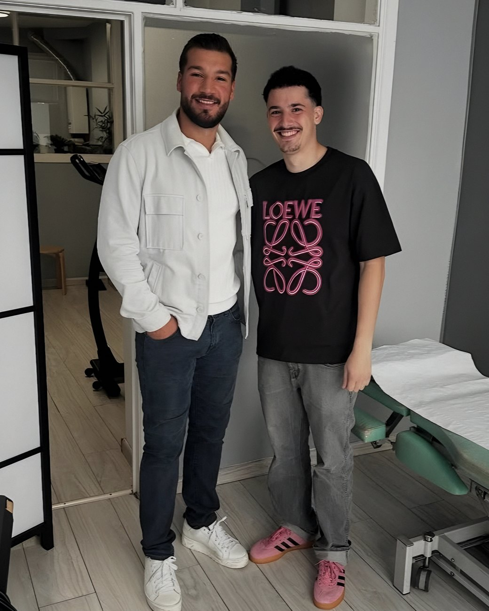
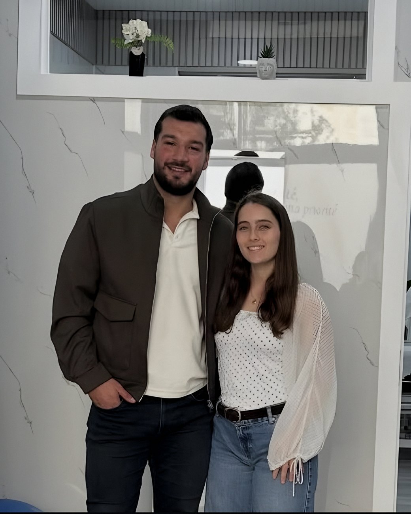

Simon Cano (à droite) avec Aydin Bozok
Kinésithérapeute
Simon Cano
Rééducation, douleurs musculaires et articulaires, récupération après une blessure : Simon vous accompagne avec un suivi adapté à votre corps et à vos objectifs.
L'équipe
Trois spécialistes réunis dans un même centre, pour une prise en charge cohérente de votre corps et de votre esprit.

Simon Cano (à droite) avec Aydin Bozok
Rééducation, douleurs musculaires et articulaires, récupération après une blessure : Simon vous accompagne avec un suivi adapté à votre corps et à vos objectifs.

Julie Thiebaut (à droite) avec Aydin Bozok
Julie prend en charge vos douleurs et votre rééducation avec écoute et précision, pour vous aider à retrouver une mobilité confortable au quotidien.
Kubra réalise des bilans neuropsychologiques et accompagne les patients dont la mémoire, l'attention ou la concentration posent difficulté.
Aydin Bozok a fondé ABmoment pour réunir, dans un même lieu, des praticiens qui partagent la même exigence : le savoir-faire, l'écoute et la précision.
Appelez le centre ou contactez directement votre praticien, par téléphone ou WhatsApp.